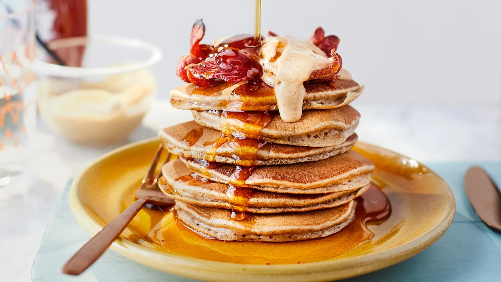

PANCAKE RECIPE
Homemade pancakes are the best treat for your breakfast.Pancakes are easier to make than we think. following this recipe You can make fluffy delicious pancakes with just some ingridients at your home within an hour.
Ingridients
- Flour
- Milk
- Sugar
- Salt
- Egg
Method
- PRE-HEAT griddle over medium heat (190 degree C) until drops of water sizzle and evaporate quickly. Grease griddle if necessary.
- MIX all ingridients 1 cup Flour,2 tablespoons Sugar,1/2 tablespoon salt,1 cup milk,1 Egg in a bowl with a whisk until smooth.
- For each pancake pour 1/4 cup batter on hot griddle.
- BAKE until bubble break,on surface and edges just begin to dry.
- TURN cook other sides about 1 minute or until golden.